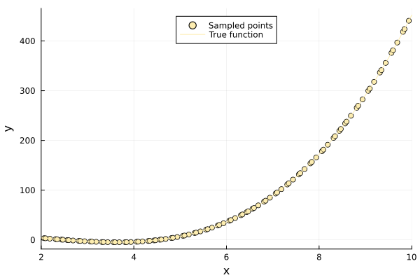
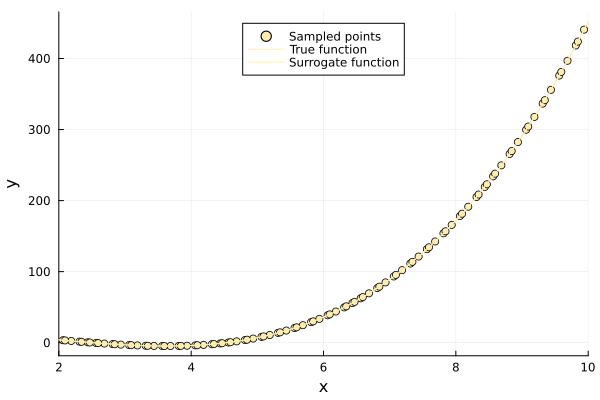
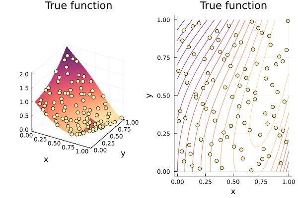
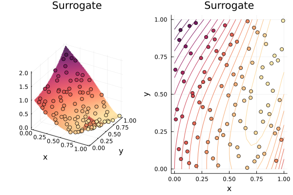

Gradient Enhanced Kriging Surrogate Tutorial
Gradient-enhanced Kriging extends Kriging with derivative observations. Because the Gaussian kernel is mean-square differentiable, the joint covariance of a process and its partial derivatives is available in closed form, so a gradient can be treated as d extra observations rather than as a separate model. That is usually more accurate than Kriging at the same number of sample points, and it is what makes GEK attractive when gradients come cheaply — from an adjoint solver or from automatic differentiation.
The cost is the size of the system. With n points in d dimensions the covariance matrix is n(1 + d) × n(1 + d), so it grows with the number of inputs and with the number of samples, and it is far worse conditioned than the plain correlation matrix — see the conditioning note in the docstring below. GEKPLS is the indirect alternative for high dimensions.
Surrogates.GEK — Type
GEK(x, y, lb, ub; p = 2.0, theta = 1.0)Gradient-enhanced Kriging surrogate.
Based on: Han, Görtz and Zimmermann (2013), "Improving variable-fidelity surrogate modeling via gradient-enhanced kriging and a generalized hybrid bridge function", Aerosp Sci Technol 25:177-189; and Chung and Alonso (2002), "Using Gradients to Construct Cokriging Approximation Models for High-Dimensional Design Optimization Problems", AIAA 2002-0317.
GEK augments the Kriging covariance system with derivative observations. The surrogate is callable as gek(x_new), exposes uncertainty through std_error_at_point, and supports update!(gek, x_new, y_new, grad_new).
Fields
x: sample locations,nof them.y: then(1 + d)observations, values first and then gradients grouped by sample point, as described underybelow.lb: lower bound of the input domain.ub: upper bound of the input domain.p: correlation exponent. Only2is admissible; see the keyword below.theta: correlation scale: a scalar in one dimension, one entry per input coordinate otherwise.mu: fitted process mean.b: covariance weightsR⁻¹(y - Fμ), one per observation.sigma: fitted process variance.R_fact: Cholesky factorization of the nugget-regularized GEK covariance matrix. The deprecated propertyinverse_of_Rstill materializesR⁻¹from it.
Arguments
x: sample locations.y: then(1 + d)observations, laid out as[f(x₁), …, f(xₙ), ∂₁f(x₁), …, ∂_d f(x₁), ∂₁f(x₂), …, ∂_d f(xₙ)]that is, all
nfunction values, then each point'sdpartial derivatives in order. In one dimension this isvcat(f.(x), f'.(x)).lb: lower bound of the input domain.ub: upper bound of the input domain.
Keywords
p: correlation exponent,2by default and required to be2. The derivative blocks above are second derivatives of the correlation function, which exist only for the Gaussian kernel;exp(-θ|Δ|^p)withp < 2has a cusp at the origin and no derivative-derivative covariance. The keyword is kept, and validated, so that an inadmissible value is reported rather than silently producing a meaningless model.theta: correlation scale, a scalar in one dimension and one entry per input coordinate otherwise. When left unset it is fitted by maximum likelihood, starting from the same sample-spread heuristicKriginguses;update!then refits it. An explicitly suppliedthetais used as given.optimize_theta: whether to fitthetaby maximizing the concentrated log-likelihood over alln(1 + d)observations. Defaults totrueexactly whenthetais not supplied.n_start: Latin-hypercube starts for that search.maxiters: Nelder-Mead iteration cap per start.
Returns
A GEK surrogate satisfying the generic surrogate interface. Duplicate sample points make the covariance matrix singular and are rejected with an ArgumentError.
Direct GEK is far worse conditioned than plain Kriging. Derivative observations at nearby points are nearly redundant once the correlation length is long, so a fitted theta routinely puts cond(R) at 1e16–1e18 where the value block alone is near 1e9. The nugget of Kriging regularizes it to a condition number of 1e12, which keeps predictions accurate — the fitted scale beats the sample-spread heuristic by two to three orders of magnitude on smooth problems — at the cost of reproducing training points to about 1e-5 rather than to machine precision. Where that matters, GEKPLS is the indirect alternative: it adds Taylor-extrapolated points to an ordinary Kriging system instead of forming derivative covariance blocks, and so never builds this matrix.
Let's have a look at the following function to use Gradient Enhanced Surrogate: $f(x) = x^3 - 6x^2 + 4x + 12$
First of all, we will import Surrogates and Plots packages:
using Surrogates
using PlotsSampling
We choose to sample f in 100 points between 2 and 10 using the sample function. The sampling points are chosen using a Sobol sequence, this can be done by passing SobolSample() to the sample function.
n_samples = 100
lower_bound = 2
upper_bound = 10
xs = lower_bound:0.001:upper_bound
x = sample(n_samples, lower_bound, upper_bound, SobolSample())
f(x) = x^3 - 6x^2 + 4x + 12
der(x) = 3 * x^2 - 12 * x + 4
y1 = f.(x)
y2 = der.(x)
scatter(x, y1, label = "Sampled points", xlims = (lower_bound, upper_bound), legend = :top)
plot!(f, label = "True function", xlims = (lower_bound, upper_bound), legend = :top)
GEK takes all the observations in one vector: every function value first, then every derivative. In one dimension that is simply
y = vcat(y1, y2)
length(y) == 2 * n_samplestrueBuilding a surrogate
With our sampled points, we can build the Gradient Enhanced Kriging surrogate using the GEK function.
my_gek = GEK(x, y, lower_bound, upper_bound, theta = 0.3)
scatter(x, y1, label = "Sampled points", xlims = (lower_bound, upper_bound), legend = :top)
plot!(f, label = "True function", xlims = (lower_bound, upper_bound), legend = :top)
plot!(my_gek, label = "Surrogate function", ribbon = p -> std_error_at_point(my_gek, p),
xlims = (lower_bound, upper_bound), legend = :top)
Gradient Enhanced Kriging Surrogate Tutorial (ND)
First of all, let's define the function we are going to build a surrogate for.
using Plots
using SurrogatesNow, let's define the function:
function leon(x)
x1 = x[1]
x2 = x[2]
term1 = (x2 - x1^3)^2
term2 = (1 - x1)^2
y = term1 + term2
endleon (generic function with 1 method)Sampling
Let's define our bounds, this time we are working in two dimensions. In particular, we want our first dimension x to have bounds 0, 1, and 0, 1 for the second dimension. We are taking 100 samples of the space using Sobol Sequences. We then evaluate our function on all the sampling points.
n_samples = 100
lower_bound = [0, 0]
upper_bound = [1, 1]
xys = sample(n_samples, lower_bound, upper_bound, SobolSample())
y1 = leon.(xys)100-element Vector{Float64}:
1.1124164985287734
0.7971708308525649
0.15007553258897133
0.9222684086473691
0.36346270954368265
0.05102696733797529
0.12359681268412714
1.3183157051082617
0.6632428030300161
0.20718450295885305
⋮
0.7813352313541237
0.5076610619732129
0.05600952949467697
0.25017019456678113
1.6610263616386511
0.890628840729395
0.3485896751477675
0.08169559776627366
1.097441250041019xgrid, ygrid = 0:0.05:1, 0:0.05:1
p1 = surface(xgrid, ygrid, (x1, x2) -> leon((x1, x2)))
xs = [xy[1] for xy in xys]
ys = [xy[2] for xy in xys]
scatter!(xs, ys, y1)
p2 = contour(xgrid, ygrid, (x1, x2) -> leon((x1, x2)))
scatter!(xs, ys)
plot(p1, p2, title = "True function")
Building a surrogate
Using the sampled points, we build the surrogate, the steps are analogous to the 1-dimensional case.
In d dimensions the observation vector holds all n function values, then each point's d partial derivatives in coordinate order:
\[[\, f(x_1),\ \dots,\ f(x_n),\ \partial_1 f(x_1),\ \dots,\ \partial_d f(x_1),\ \partial_1 f(x_2),\ \dots,\ \partial_d f(x_n) \,]\]
so flattening a vector of gradients in order produces exactly the right layout.
grad(x) = (2 * (x[2] - x[1]^3) * (-3x[1]^2) - 2 * (1 - x[1]), 2 * (x[2] - x[1]^3))
y2 = reduce(vcat, collect.(grad.(xys)))
y = vcat(y1, y2)
length(y) == n_samples * (1 + 2)trueLeft unset, theta is fitted by maximum likelihood over all n(1 + d) observations, exactly as Kriging fits it over the n function values alone.
my_GEK = GEK(xys, y, lower_bound, upper_bound)
my_GEK.theta2-element Vector{Float64}:
4.167823334428848
0.35410275710318134p1 = surface(xgrid, ygrid, (x1, x2) -> my_GEK((x1, x2)))
scatter!(xs, ys, y1, marker_z = y1)
p2 = contour(xgrid, ygrid, (x1, x2) -> my_GEK((x1, x2)))
scatter!(xs, ys, marker_z = y1)
plot(p1, p2, title = "Surrogate")